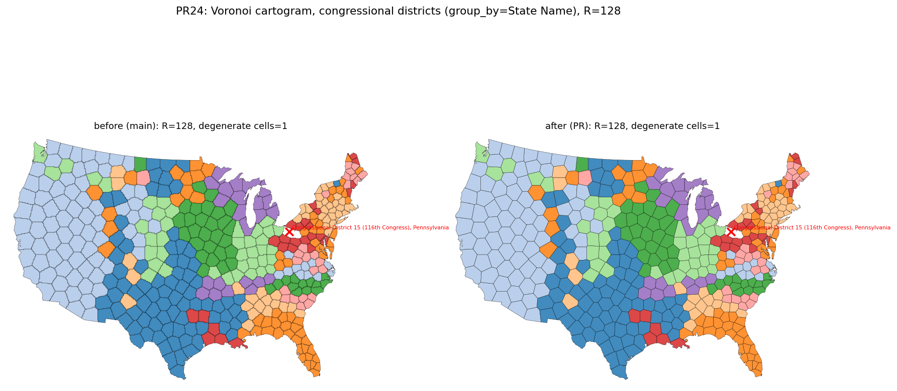
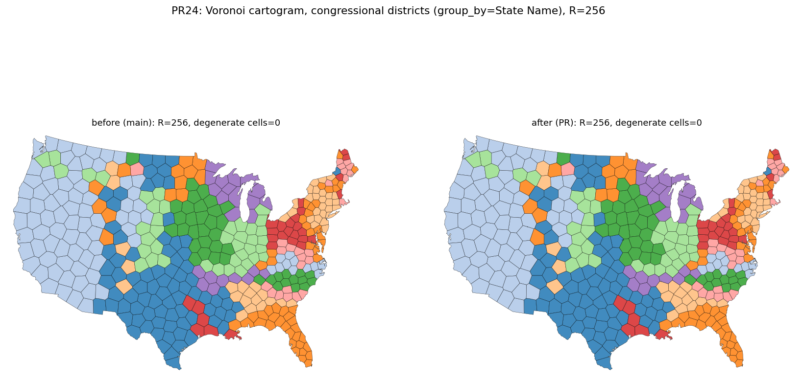
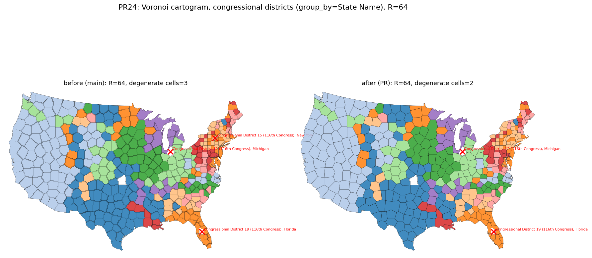
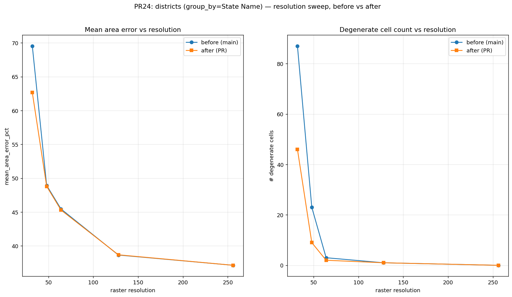
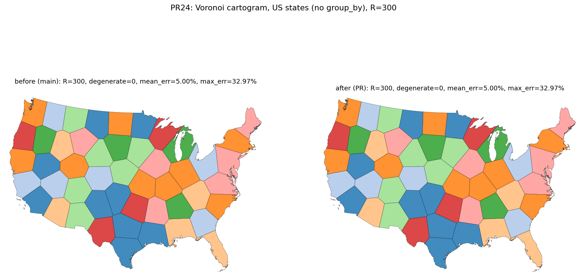

Four independent fixes for Voronoi cells degrading to a Point, covering adjacency detection, non-polygonal clip results, and an area-equalisation offset that could strand a seed with an empty power cell.
| Case | Before (main) | After (PR) |
|---|---|---|
| Districts R=64 | degenerate_cells=3, mean_err=45.45% | degenerate_cells=2, mean_err=45.30% |
| Districts R=128 | degenerate_cells=1, mean_err=38.65% | degenerate_cells=1, mean_err=38.69% |
| Districts R=256 | degenerate_cells=0, mean_err=37.14% | degenerate_cells=0, mean_err=37.14% |
| States R=300 | degenerate=0, mean_err=5.00%, max_err=32.97% | degenerate=0, mean_err=5.00%, max_err=32.97% |
| Resolution | Before (main) | After (PR) |
|---|---|---|
| 32 | n_degenerate=87, mean_err=69.54% | n_degenerate=46, mean_err=62.66% |
| 48 | n_degenerate=23, mean_err=48.94% | n_degenerate=9, mean_err=48.81% |
| 64 | n_degenerate=3, mean_err=45.45% | n_degenerate=2, mean_err=45.30% |
| 128 | n_degenerate=1, mean_err=38.65% | n_degenerate=1, mean_err=38.69% |
| 256 | n_degenerate=0, mean_err=37.14% | n_degenerate=0, mean_err=37.14% |

Congressional districts at R=128: degenerate cells unchanged at 1, mean area error 38.65% to 38.69%.

Congressional districts at R=256: no degenerate cells before or after, mean area error unchanged at 37.14%.

Congressional districts at R=64: degenerate cells drop from 3 to 2, mean area error 45.45% to 45.30%.

Degenerate cell count and mean area error across R=32..256, before vs after.

US states at R=300: no degenerate cells before or after, mean/max area error unchanged.